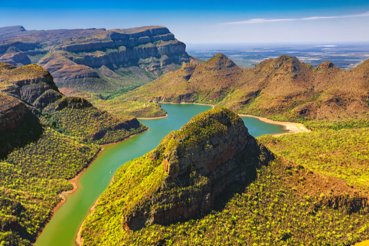
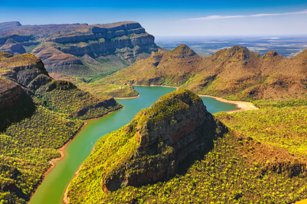

Mpumalanga is a province popular with tourists visiting the Kruger National Park and other attractions. Kruger National Park was established in 1898 for the protection of Lowveld wildlife, covering 20,000 square kilomtres. The other major tourist attractions include the Sudwala Caves and the Blyde Canyon River. Major activities including the big jump, mountain and quad biking, horse trails, river rafting and big game viewing are endemic to the region. This is the "Big Five" territory. In 2008, a Haute Cuisine Route was formed., trickling from Mbombela down to Hazyview. The Lowveld Gourmet Route covers the four top fine dining restaurants the area has to offer.